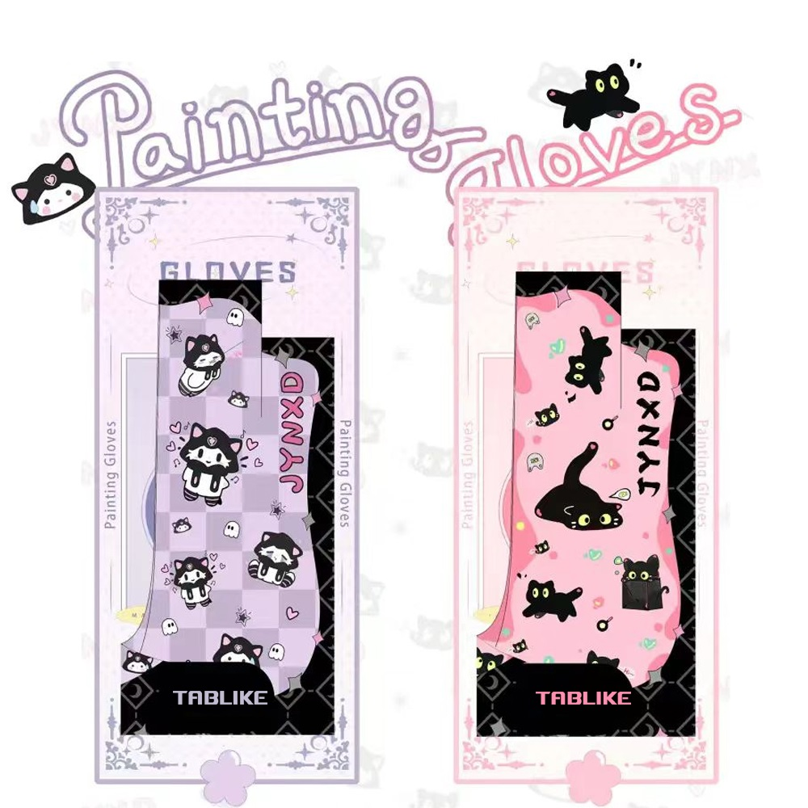

Tablike Drawing Glove

TABLIKE Aritist Drawing Glove for Ipad / Samsung Tablet Paiting, 3-Layer Palm Rejection Glove for Graphics Tablet Drawing.
Versatile Use & Smooth Glide: Perfect for digital drawing, sketching, inking, coloring, and even traditional paper sketching. The TABLIKE Glove reduces friction, allowing your hand to glide effortlessly across your drawing surface. Your screen stays clean, and your lines will have never looked better!
No More Smudges & Touchscreen Friendly: Say goodbye to those annoying smudges on your iPad, graphics tablet, or monitor. But hey, it won’t stop accidental touch screen taps – it just makes everything feel a lot smoother (your device should handle palm-rejection after all, not your glove!) The TABLIKE Glove’s smooth design keeps things clean, while the exposed fingers let you access both two-finger-undo and three-finger-redo shortcuts in your favorite drawing apps!
Ambidextrous & Perfect Fit: Our glove is designed for both left and right hands and comes in two sizes (Small/Medium) to fit everyone. Whether you’re a lefty or a righty, this glove’s got you covered.
Super Comfy & Stretchy: Made from soft polyester and nylon, the TABLIKE Glove is incredibly comfortable and flexible! The high-elastic material ensures excellent breathability and the extra strap between your index finger and thumb guarantees a more secure fit.
Timeless Black & Dirt-Defying: TABLIKE glove comes in fashion pink and purple color – stylish and dirt-resistant. You won’t need to wash it every other day, so it stays looking sleek and clean with minimal effort.
Size recommend:
Body height: 145cm-165cm, please choose S size;
Body height: 165cm-185cm, please choose M size.